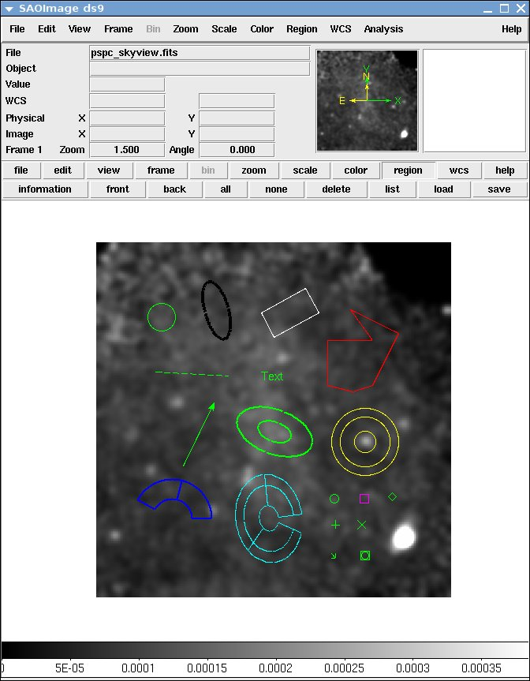
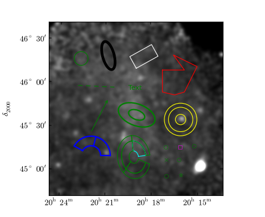
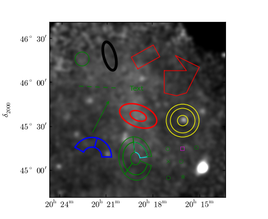

Overview¶
pyregion is a python module to parse ds9 region files. It also support ciao region files.
Please note that my main emphasis is to read in the regions files generated by ds9 itself. It reads most of the region files created by ds9. However, it may fail to read some of the user-created (or created by other programs) region files, even if they can be successfully read by ds9. Ruler, Compass and Projection type is ignored.
| ds9 | pyregion + matplotlib |
|---|---|
|  | 
|
{kind=link}
Read Region Files¶
pyregion.read_region takes the region string as an argument and returns list of shape objects.
from pyregion import read_region
region_name = "ds9.reg"
region_string = open(region_name).read()
r = read_region(region_string)
The shape object is a python representation of each region definition. For example,:
from pyregion import read_region
region_string = """
# Region file format: DS9 version 4.1
# Filename: test01.fits
global color=green dashlist=8 3 width=1 font="helvetica 10 normal" select=1 highlite=1 dash=0 fixed=0 edit=1 move=1 delete=1 include=1 source=1
fk5
circle(11:24:24.230,-59:15:02.20,18.5108") # color=cyan background
box(11:24:39.213,-59:16:53.91,42.804",23.616",19.0384) # width=4
"""
r = read_region(region_string)
And you have:
>>> print r[0]
Shape : circle ( HMS(11:24:24.230),DMS(-59:15:02.20),Ang(18.5108") )
>>> print r[1]
Shape : box ( HMS(11:24:39.213),DMS(-59:16:53.91),Ang(42.804"),Ang(23.616"),Number(19.0384) )
The shape object has following attributes,
name : name of the shape. e.g., circle, box, etc..
>>> print r[0].name circle
coord_format : coordinates format. e.g., “fk5”, “image”, “physical”, etc...
>>> print r[0].coord_format fk5
coord_list : list of coordinates as the specified coordinate format. The coordinate value for sky coordinate is degree.
>>> print r[0].coord_list [171.10095833333332, -59.250611111111112, 0.0051418888888888886]
comment : comment string associated with the shape (can be None)
>>> print r[0].comment color=cyan background
attr : attributes of the shape. This includes global attributes defined by the global command and local attributes defined in the comment. The first item is a list of key-only attributes without associated values (e.g., background..) and the second item is a dictionary of attributes of key-value pairs.
>>> print r[0].attr[0] ['background'] >>> print r[0].attr[1] {'color': 'cyan', 'dash': '0 ', 'dashlist': '8 3 ', 'delete': '1 ', 'edit': '1 ', 'fixed': '0 ', 'font': '"helvetica 10 normal"', 'highlite': '1 ', 'include': '1 ', 'move': '1 ', 'select': '1 ', 'source': '1', 'width': '1 '}
Some attributes like “tag” allows multiple items and this is not currently supported (the last definition override previous ones).
pyregion.read_region_as_imagecoord converts the coordinate into the image coordinate (“1”-based). And the function requires the Pyfits.Header instance as the second parameter.:
from pyregion import read_region_as_imagecoord
import pyfits
f = pyfits.open("t1.fits")
r2 = read_region_as_imagecoord(region_string, header=f[0].header)
The return value is similar to read_region, but the coordinate is converted to the image coordinate.
>>> print r2[0].coord_format
image
>>> print r2[0].coord_list
[482.27721401429852, 472.76641383805912, 18.811792596807045]
Draw Regions with Matplotlib¶
pyregion provides a helper function to draw regions with matplotlib.
from pyregion.mpl_helper import as_mpl_artists
patch_list, artist_list = as_mpl_artists(r2)
The argument for as_mpl_artists needs to be the return list of the read_region_as_imagecoord call, i.e., coordinate needs to be in image coordinate. as_mpl_artists returns two list of mpl Artist class. The first item is a list of mpl’s Patches, and the second one is other kind of artists (e.g., Text). The return values need to be added to the axes manually:
# ax is a mpl Axes object
for p in patch_list:
ax.add_patch(p)
for t in artist_list:
ax.add_artist(t)
[source code, hires.png, pdf]
{kind=link}
The (optional) second argument of as_mpl_artists is a function that takes the shape object as and argument and returns a dictionary object that will be used as a keyword arguments (e.g., colors and line width) for creating the mpl artists. By default, it uses pyregion.mpl_helper.properties_func_default, which try to respect the ds9 attributes.
import sys
try:
import pyfits
except ImportError:
print "This example requires the pyfits module installed"
sys.exit(0)
import matplotlib.pyplot as plt
import matplotlib.cm as cm
from pyregion import read_region_as_imagecoord
from pyregion.mpl_helper import as_mpl_artists
# read in the image
xray_name="pspc_skyview.fits"
f_xray = pyfits.open(xray_name)
try:
import pywcsgrid2
ax=pywcsgrid2.subplot(111, header=f_xray[0].header)
except ImportError:
ax=plt.subplot(111)
ax.imshow(f_xray[0].data, cmap=cm.gray, vmin=0., vmax=0.00038, origin="lower")
reg_name = "test.reg"
r = read_region_as_imagecoord(open(reg_name).read(), header=f_xray[0].header)
from pyregion.mpl_helper import properties_func_default
# Use custom function for patch attribute
def fixed_color(shape, saved_attrs):
attr_list, attr_dict = saved_attrs
attr_dict["color"] = "red"
kwargs = properties_func_default(shape, (attr_list, attr_dict))
# This is just for a demonstration. Setting alpha value does not
# affect the alpha of the edge color, which I think a mpl bug.
kwargs["alpha"]=0.5
return kwargs
# select region shape with tag=="Group 1"
r1 = [rr for rr in r if rr.attr[1].get("tag") == "Group 1"]
patch_list1, artist_list1 = as_mpl_artists(r1, fixed_color)
r2 = [rr for rr in r if rr.attr[1].get("tag") != "Group 1"]
patch_list2, artist_list2 = as_mpl_artists(r2)
for p in patch_list1 + patch_list2:
ax.add_patch(p)
for t in artist_list1 + artist_list2:
ax.add_artist(t)
plt.show()
[source code, hires.png, pdf]
{kind=link}